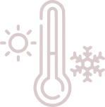

О нас
Представьте себе шепот нежных волокон шёлка, как прикосновение к самим секретам красоты!
Так вот, Нить — это магия, воплощённая в каждой
ниточке.
Шелковые наволочки, полотенца и резинки для волос — это не просто предметы, это роскошь для всех наших любимых клиентов.
Пусть ваши волосы будут обвиты нежностью, а кожа — ласково прикоснется к шелковистой глади.
О пользе шёлка
Экологичность
Шёлковые ткани создаютсяиз натуральных волокон шелкопряда
Воздухонепроницаемость
Шёлк позволяет коже дышать, не задерживает влагу и обеспечивает комфортный микроклиматГиппоаллергенность
Шёлк не вызывает аллергии или раздражения кожиТерморегуляция
 Шелк подстраивается под температуру тела, обеспечивая комфорт в любое время годаУход за тканью
Ручная стирка
Используйте ph — нейтральное жидкое мыло и кондиционер.
Допускается использование детского мыла, и специальных средств для стирки шелка. Можно изделие замочить на несколько минут.
Можно гладить
Гладить шёлк нужно аккуратно — при низкой температуре с обратной стороны шёлковой ткани.
Желательно использовать режим «шёлк» на утюге.
Взаимодействие
с другими средствами
Не распыляйте парфюм или другие химические вещества на изделия.
Сушка
После стирки просто встряхните изделие — не выкручивайте!